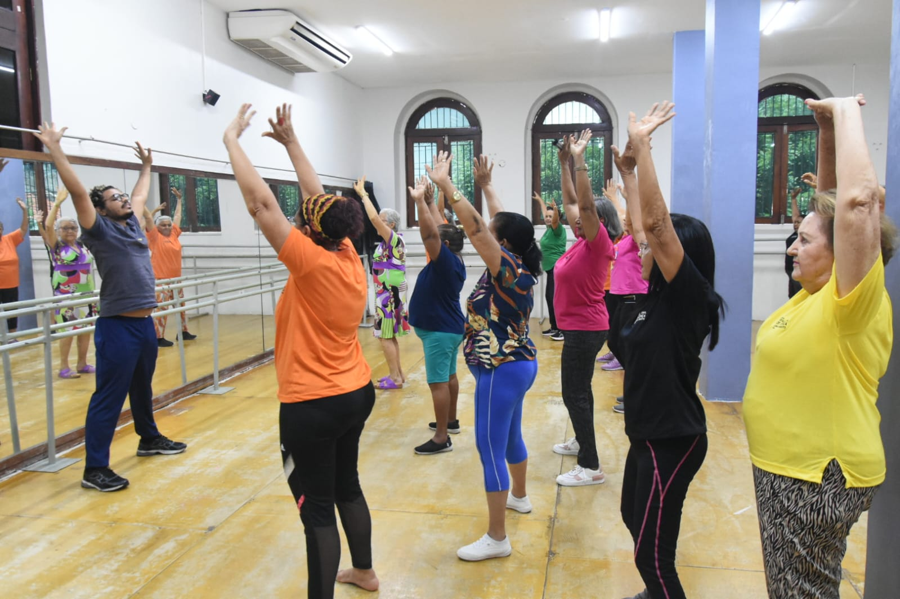
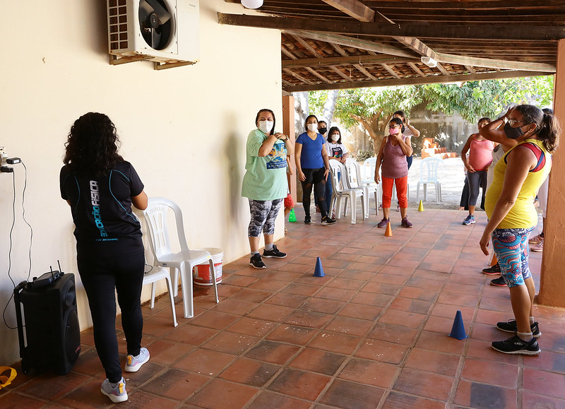

Aula de Dança
Lares de idosos e instituições parceiras recebem semanalmente aulas de dança, promovendo atividade cardio respiratória em um ambiente mais ludico.

Conheça nossos projetos e oportunidades de voluntariado.

Lares de idosos e instituições parceiras recebem semanalmente aulas de dança, promovendo atividade cardio respiratória em um ambiente mais ludico.

Lares de idosos e instituições parceiras recebem semanalmente treinos funcionais em grupo, reavendo a força e autonomia dos alunos.
Movimente-se com a Geração Ativa levando movimento e bem-estar à terceira idade!
Ir para cadastroPlataforma segura para doações com prestação de contas periódica.